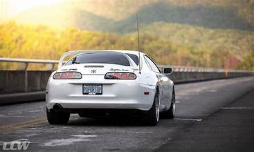

Toyota Supra (იაპონ. トヨタ・スープラ) — სერიული სპორტული ავტომობილი, წარმოებული კომპანია Toyota მიერ 1978 წლიდან დღემდე. Supra-ს პირველადი დიზაინი დაპროექტებული იყო Toyota Celica-ს დიზაინის მიხედვით, მაგრამ ავტომობილის კორპუსი გახდა შედარებით გრძელი და ფართო. 1986 წლიდან, Supra განცალკევდა Celica-სგან, რის შემდეგაც იქცა ცალკეულ მოდელად. ამასთან დაკავშირებით, Toyota-მ შეწყვიტა პრეფიქსი Celica-ს გამოყენება და ავტომობილის სახელწოდება გახდა უბრალოდ Supra. პირველი, მეორე და მესამე Supra-ს თაობა იწარმოებოდა ტაჰარა-ს ქარხანაში, ხოლო მეოთხე თაობა ქალაქ ტოიოტა-ში.
Supra-ს კავშირი აქვს Toyota 2000GT-თან, რომლისგანაც მას გადაეცა M-სერიის ტოიოტას ძრავი.